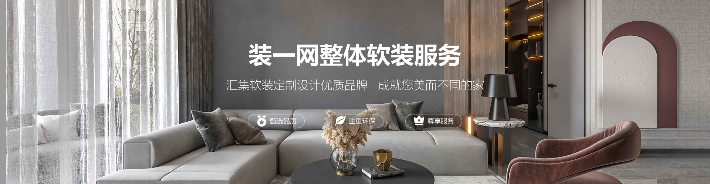

<!DOCTYPE html>
<html>
	<head>
		<meta charset="utf-8">
		<title></title>
		<link rel="stylesheet" href="./css/comm.css">
		<style type="text/css">
			/* 绝对定位的元素会脱离标准文档流
				父级塌陷，解决办法是给父级加高度
			 
			 */
			.wrapper{
				/* overflow: hidden; */
				/* position: relative; */
				width: 100%;
				height: 500px;
			}
			.box{
				/* width: 1920px; */
				/* position: absolute; */
				height: 500px;
				width: 100%;
				background: url(./img/01.jpg) no-repeat center center;
				/* left: 50%; */
				/* margin-left: -960px; */
				background-size: cover;
				margin: 0 auto;
			}
		</style>
	</head>
	<body>
		<div class="wrapper">
			<div class="box">
				<!--  -->
			</div>
		</div>
	</body>
</html>